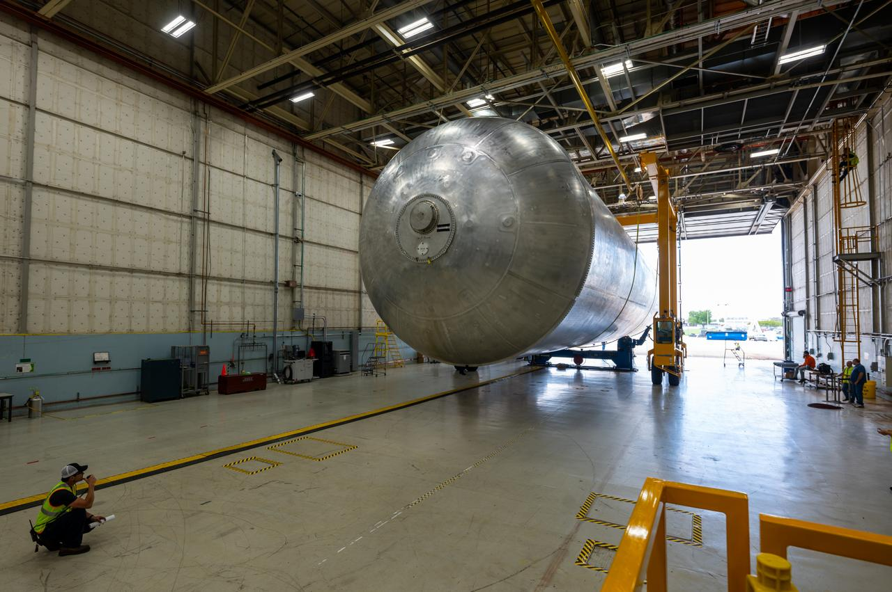
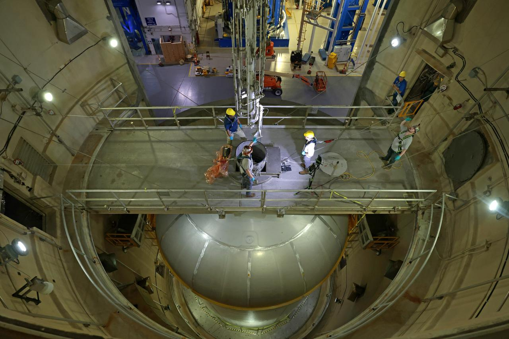
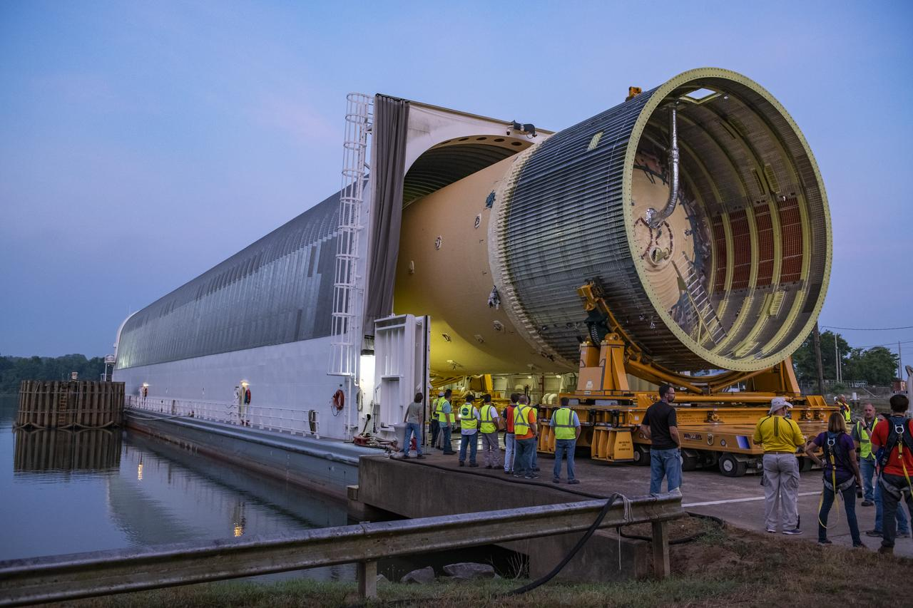
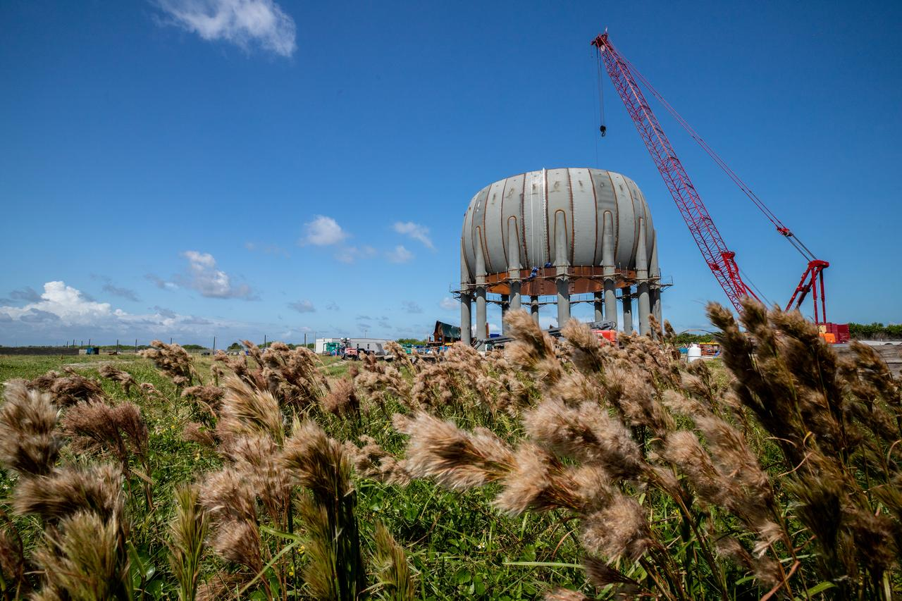
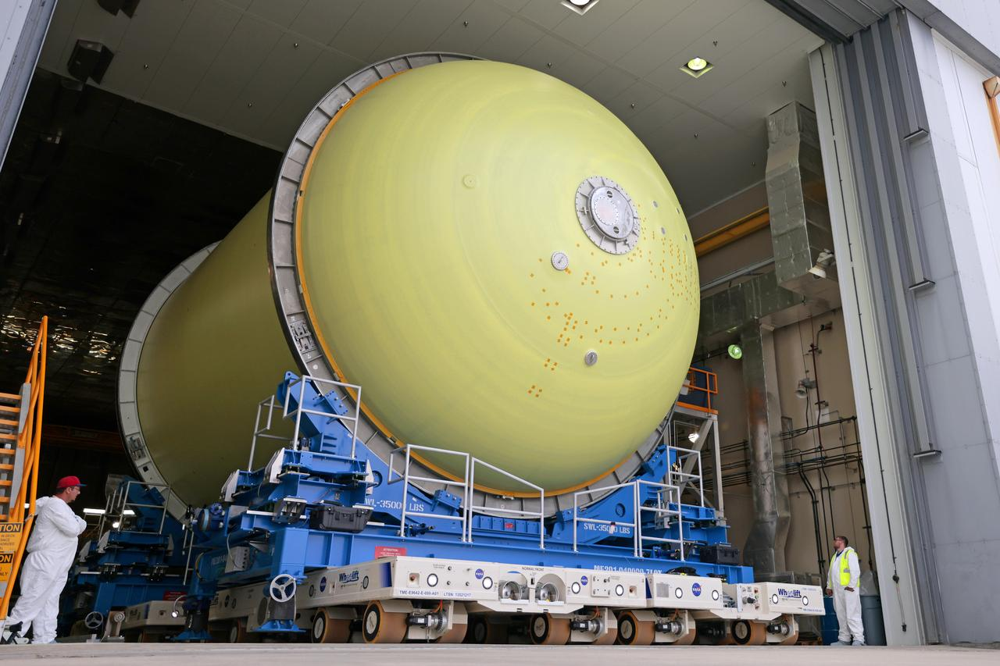
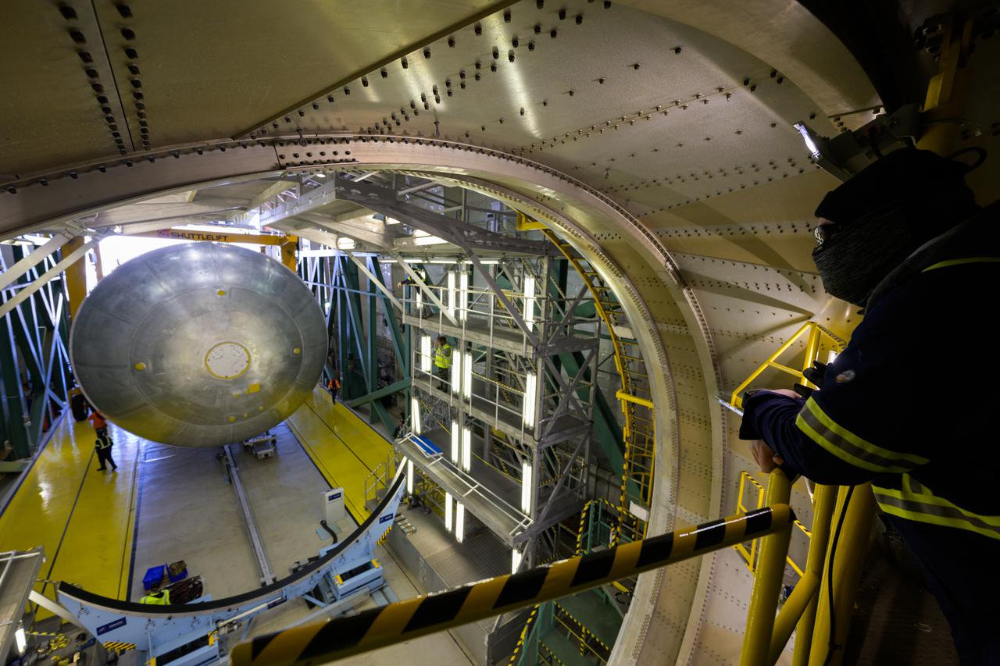

Reentradas geram vibrações extremas e microfissuras internas invisíveis em tanques de carbono. Inspeções manuais demoram semanas, causando prejuízos e atrasos.
O projeto TAPS automatiza esse diagnóstico via telemetria acústica de sensores piezoelétricos, localizando microfissuras e liberando o veículo com segurança.

Sensores piezoelétricos captam as vibrações das trincas na fuselagem, transmitindo esses dados de fadiga estrutural via telemetria para o Arduino.
O algoritmo em Python calcula as equações de desgaste de Euler, gerando diagnósticos automatizados sobre a integridade de cada tanque.

O objetivo geral busca eliminar as inspeções manuais demoradas nos tanques, aumentando a segurança e a agilidade nos lançamentos aeroespaciais.
A meta técnica foca em processar a telemetria acústica com algoritmos preditivos matemáticos, localizando falhas internas invisíveis em poucos minutos.

A solução impacta diretamente empresas operadoras de lançadores espaciais reutilizáveis e agências aeroespaciais que buscam otimizar suas manutenções estruturais.
Engenheiros de estruturas e inspetores de segurança de solo também se beneficiam com diagnósticos automatizados, ágeis e altamente confiáveis.

O sistema garante economia financeira massiva e acelera os relatórios técnicos, permitindo o retorno rápido e seguro do veículo espacial.
A automação mitiga os erros humanos de varreduras manuais cegadas, elevando a confiabilidade das estruturas e reduzindo drasticamente os acidentes.

Após o pouso do foguete, a equipe técnica conecta o sistema para receber os dados acumulados pelos sensores piezoelétricos.
O algoritmo calcula a fadiga estrutural em minutos, indicando as coordenadas exatas das microfissuras e liberando o veículo para abastecimento.
Sua tarefa é responder corretamente às perguntas e alcançar a maior pontuação possível. Cada resposta certa o aproxima do sucesso da missão. Aperte os cintos e comece agora!
Teste seus conhecimentos com nosso quiz:
Iniciar Quiz